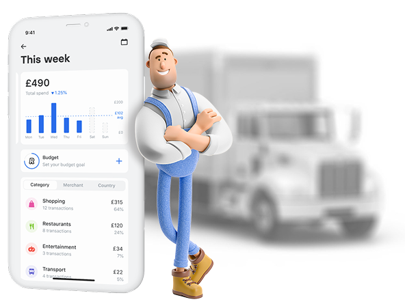

<section class="third" id="third">
  <div class="container">
    <div class="third__wrapper">
      <div class="third__content">
        <h2 class="third__title">Круто, ты дошел до третьего блока</h2>
        <div class="third__descr">63% опрошенных пользовались кредитами из-за того, что не могли покрыть непредвиденные
          расходы свыше 15 000 ₽.</div>
        <div class="third__descr">Доступ к заработанным деньгам помогает отказаться от кредитов и экономить деньги на
          процентах и штрафах.
        </div>
      </div>
      <div class="third__wrapper-img">
        
      </div>
    </div>
  </div>
</section>